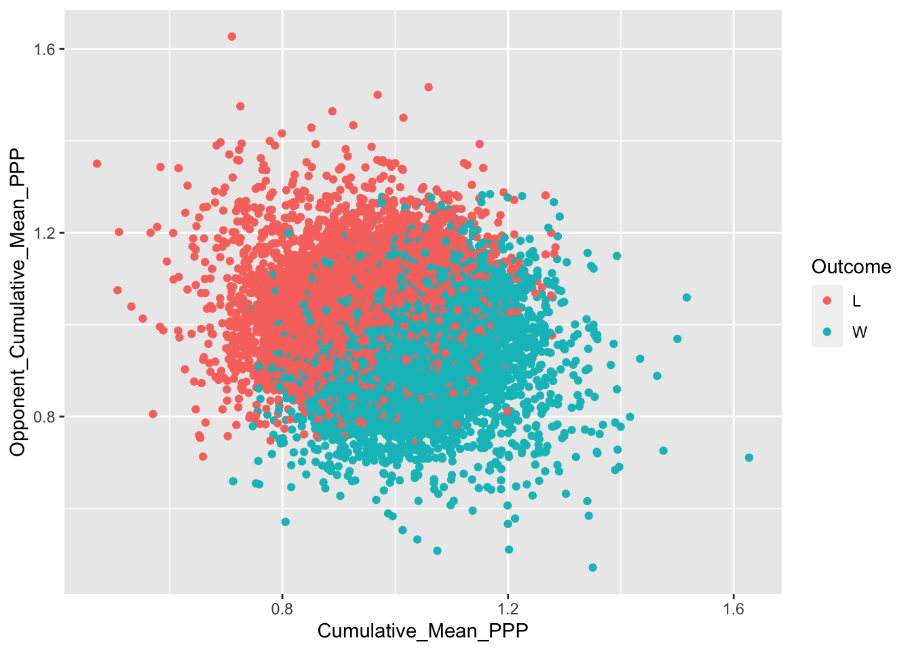
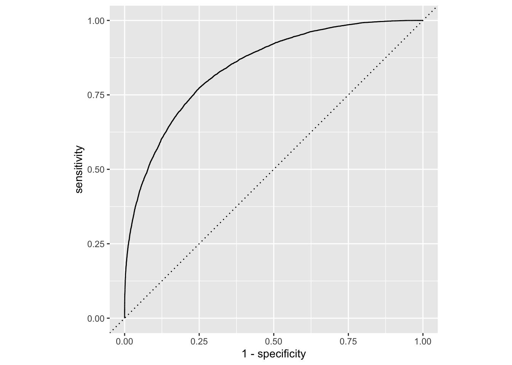
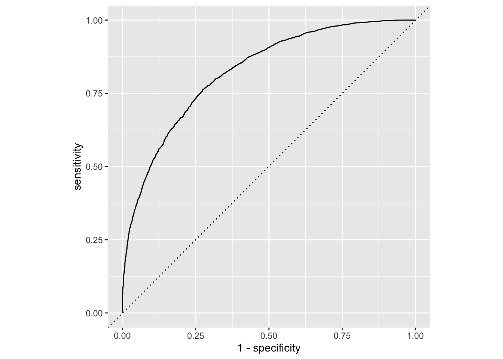

Chapter 6 Logistic Regression
Up to this point, we’ve been dealing with problems that lead to a quantitative answer: We want a number. How many points? How many possessions? But there are lots of problems in the world where the answer is qualitative: Did they win or lose? Did the player get drafted or no? Is this player a flight risk to transfer or not?
These are problems of classification and they use many of the same algorithms we’ve used to try and predict those classes.
Ultimately, the algorithms will predict the probability that this row is X or Y and make a decision based on that probability. That probability will be somewhere between 0 and 1, with 0 being no chance and 1 being a sure thing.
Where this gets interesting is in the middle.
library(tidyverse)
library(tidymodels)
set.seed(1234)What we’re going to do here is calculate possessions in the game, the team’s Points Per Possession and then some cumulative means for those two things. Then we’ll do a little cleanup on it being a home or an away game and we’ll clean up the win/loss column to be simple W or L.
games <- read_csv("data/cbblogs1521.csv") %>% mutate(
Possessions = .5*(TeamFGA - TeamOffRebounds + TeamTurnovers + (.475 * TeamFTA)) + .5*(OpponentFGA - OpponentOffRebounds + OpponentTurnovers + (.475 * OpponentFTA)),
PPP = TeamScore/Possessions) %>%
group_by(Team, Season) %>%
mutate(
Cumulative_Mean_Possessions = cummean(Possessions),
Cumulative_Mean_PPP = cummean(PPP)
) %>% ungroup() %>%
mutate(
Location = case_when(
str_trim(HomeAway) == "@" ~ "A",
str_trim(HomeAway) == "N" ~ "N",
TRUE ~ "H"
),
Outcome = case_when(
grepl("W", W_L) ~ "W",
grepl("L", W_L) ~ "L"
)
) %>%
mutate(Outcome = as.factor(Outcome))##
## ── Column specification ────────────────────────────────────────────────────────
## cols(
## .default = col_double(),
## Season = col_character(),
## Date = col_date(format = ""),
## TeamFull = col_character(),
## Opponent = col_character(),
## HomeAway = col_character(),
## W_L = col_character(),
## URL = col_character(),
## Conference = col_character(),
## Team = col_character()
## )
## ℹ Use `spec()` for the full column specifications.Now we’ll use select to get us the fields we need.
selectedgames <- games %>% select(Season, Team, Date, Opponent, Location, Outcome, Cumulative_Mean_Possessions, Cumulative_Mean_PPP, TeamSRS)Now what we’ll do is create the reverse side of the game by just renaming things to Opponent_X. That way, we can join them together and create the whole picture of the game – team and opponent. We’ll lose some games, but those will be against Division II opponents and we won’t care.
opponentgames <- selectedgames %>% rename(Opponent_Cumulative_Mean_Possessions = Cumulative_Mean_Possessions, Opponent_Cumulative_Mean_PPP = Cumulative_Mean_PPP, OpponentSRS = TeamSRS)Now the join. This works because the Team field in opponent games is the Opponent field in selectedgames. The date of the game and the seson are identical in both sides of the game, so it ensures we’re combining data for the same, correct game.
bothsides <- selectedgames %>% left_join(opponentgames, by=c("Team" = "Opponent", "Date", "Season")) %>% na.omit() %>% select(-Team.y, -Location.y, -Outcome.y) %>% rename(Location = Location.x, Outcome = Outcome.x)6.1 Visualizing the decision boundary
This is just one dimension of the data, but it can illustrate how this works. You can see a line running through the middle, with a lot of overlap. The further left or right you go, the less overlap. That neatly captures the probabilities we’re looking at here.
ggplot() + geom_point(data=bothsides, aes(x=Cumulative_Mean_PPP, y=Opponent_Cumulative_Mean_PPP, color=Outcome))
6.2 The logistic regression
Much of implementing classification algorithms should look familiar by now. The steps we’ve been using are steps we will use again. First, we split into training and testing.
log_split <- initial_split(bothsides, prop = .8)
log_train <- training(log_split)
log_test <- testing(log_split)We create a recipe. In this case, we need to create dummy values for home and away games. Our recipe will put a 1 for home and a 0 for away, for example. We’re also going to normalize our predictors so scale differences don’t create undue influences.
log_recipe <-
recipe(Outcome ~ ., data = log_train) %>%
update_role(Team, Opponent, Date, Season, new_role = "ID") %>%
step_dummy(all_nominal(), -all_outcomes()) %>%
step_normalize(all_predictors())
summary(log_recipe)## # A tibble: 12 x 4
## variable type role source
## <chr> <chr> <chr> <chr>
## 1 Season nominal ID original
## 2 Team nominal ID original
## 3 Date date ID original
## 4 Opponent nominal ID original
## 5 Location nominal predictor original
## 6 Cumulative_Mean_Possessions numeric predictor original
## 7 Cumulative_Mean_PPP numeric predictor original
## 8 TeamSRS numeric predictor original
## 9 Opponent_Cumulative_Mean_Possessions numeric predictor original
## 10 Opponent_Cumulative_Mean_PPP numeric predictor original
## 11 OpponentSRS numeric predictor original
## 12 Outcome nominal outcome originalNow we define the model. Note the set_mode.
log_mod <-
logistic_reg() %>%
set_engine("glm") %>%
set_mode("classification")Now we have enough for a workflow.
log_workflow <-
workflow() %>%
add_model(log_mod) %>%
add_recipe(log_recipe)And now we fit our model (this can take a few minutes).
log_fit <-
log_workflow %>%
fit(data = log_train)6.3 Evaluating the fit
With logisitic regression, there’s two things we’re looking at: The prediction and the probabilities. We can get those with two different fits and combine them together.
trainpredict <- log_fit %>% predict(new_data = log_train) %>%
bind_cols(log_train)
trainpredict## # A tibble: 38,058 x 13
## .pred_class Season Team Date Opponent Location Outcome
## <fct> <chr> <chr> <date> <chr> <chr> <fct>
## 1 L 2014-… Abil… 2014-11-19 Tulsa A L
## 2 L 2014-… Abil… 2014-11-22 Duquesne H L
## 3 L 2014-… Abil… 2014-11-29 UC-Rive… A L
## 4 L 2014-… Abil… 2014-12-04 Sacrame… H W
## 5 L 2014-… Abil… 2014-12-06 Houston A L
## 6 L 2014-… Abil… 2014-12-17 Loyola … A L
## 7 L 2014-… Abil… 2014-12-23 Arkansa… N W
## 8 L 2014-… Abil… 2014-12-28 Grand C… A L
## 9 W 2014-… Abil… 2015-01-04 Central… H W
## 10 W 2014-… Abil… 2015-01-10 Nicholl… H W
## # … with 38,048 more rows, and 6 more variables:
## # Cumulative_Mean_Possessions <dbl>, Cumulative_Mean_PPP <dbl>,
## # TeamSRS <dbl>, Opponent_Cumulative_Mean_Possessions <dbl>,
## # Opponent_Cumulative_Mean_PPP <dbl>, OpponentSRS <dbl>trainpredict <- log_fit %>% predict(new_data = log_train, type="prob") %>%
bind_cols(trainpredict)
trainpredict## # A tibble: 38,058 x 15
## .pred_L .pred_W .pred_class Season Team Date Opponent Location Outcome
## <dbl> <dbl> <fct> <chr> <chr> <date> <chr> <chr> <fct>
## 1 0.981 0.0187 L 2014-… Abil… 2014-11-19 Tulsa A L
## 2 0.954 0.0463 L 2014-… Abil… 2014-11-22 Duquesne H L
## 3 0.918 0.0817 L 2014-… Abil… 2014-11-29 UC-Rive… A L
## 4 0.818 0.182 L 2014-… Abil… 2014-12-04 Sacrame… H W
## 5 0.839 0.161 L 2014-… Abil… 2014-12-06 Houston A L
## 6 0.969 0.0310 L 2014-… Abil… 2014-12-17 Loyola … A L
## 7 0.553 0.447 L 2014-… Abil… 2014-12-23 Arkansa… N W
## 8 0.899 0.101 L 2014-… Abil… 2014-12-28 Grand C… A L
## 9 0.132 0.868 W 2014-… Abil… 2015-01-04 Central… H W
## 10 0.365 0.635 W 2014-… Abil… 2015-01-10 Nicholl… H W
## # … with 38,048 more rows, and 6 more variables:
## # Cumulative_Mean_Possessions <dbl>, Cumulative_Mean_PPP <dbl>,
## # TeamSRS <dbl>, Opponent_Cumulative_Mean_Possessions <dbl>,
## # Opponent_Cumulative_Mean_PPP <dbl>, OpponentSRS <dbl>There’s several metrics to look at, but the two we will use are accuracy and roc_auc. They both are pointing toward how well the model did in two different ways. The accuracy metric looks at the number of predictions that are correct when compared to known results.
metrics(trainpredict, Outcome, .pred_class)## # A tibble: 2 x 3
## .metric .estimator .estimate
## <chr> <chr> <dbl>
## 1 accuracy binary 0.761
## 2 kap binary 0.522Another way to look at that is the confusion matrix. The confusion matrix shows what was predicted compared to what actually happened. The squares are True Positives, False Positives, True Negatives and False Negatives. True values vs the total values make up the accuracy.
trainpredict %>%
conf_mat(Outcome, .pred_class)## Truth
## Prediction L W
## L 14517 4567
## W 4530 14444The roc_auc metric is largely a graphical representation of how well the classifier did. The higher the roc_auc, the better, but too high and you’ve likely overfit the data.
We can look at the roc_auc metric for both sides of our prediction. In this case, our model is not great on Wins.
roc_auc(trainpredict, truth = Outcome, .pred_W)## # A tibble: 1 x 3
## .metric .estimator .estimate
## <chr> <chr> <dbl>
## 1 roc_auc binary 0.156But is quite confident on Loses.
roc_auc(trainpredict, truth = Outcome, .pred_L)## # A tibble: 1 x 3
## .metric .estimator .estimate
## <chr> <chr> <dbl>
## 1 roc_auc binary 0.844The advantage of the roc_auc curve is that you can visualize it.
roc_data <- roc_curve(trainpredict, truth = Outcome, .pred_L)
roc_data %>%
ggplot(aes(x = 1 - specificity, y = sensitivity)) +
geom_path() +
geom_abline(lty = 3) +
coord_equal()
6.4 Comparing it to test data
Now we can apply our fit to the test data to see how robust it is. Short version: Pretty good. Our numbers don’t dip all that much.
testpredict <- log_fit %>% predict(new_data = log_test) %>%
bind_cols(log_test)
testpredict## # A tibble: 9,514 x 13
## .pred_class Season Team Date Opponent Location Outcome
## <fct> <chr> <chr> <date> <chr> <chr> <fct>
## 1 W 2014-… Abil… 2014-12-22 South C… N W
## 2 L 2014-… Abil… 2015-03-05 Incarna… A L
## 3 L 2014-… Air … 2015-01-31 UNLV A L
## 4 W 2014-… Air … 2015-02-04 New Mex… H W
## 5 L 2014-… Akron 2014-11-23 South C… N W
## 6 W 2014-… Akron 2014-12-04 Western… H W
## 7 W 2014-… Akron 2015-01-03 Coppin … H W
## 8 W 2014-… Akron 2015-02-21 Miami (… H L
## 9 W 2014-… Akron 2015-03-09 Norther… H W
## 10 W 2014-… Alab… 2014-11-25 Jackson… H L
## # … with 9,504 more rows, and 6 more variables:
## # Cumulative_Mean_Possessions <dbl>, Cumulative_Mean_PPP <dbl>,
## # TeamSRS <dbl>, Opponent_Cumulative_Mean_Possessions <dbl>,
## # Opponent_Cumulative_Mean_PPP <dbl>, OpponentSRS <dbl>testpredict <- log_fit %>% predict(new_data = log_test, type="prob") %>%
bind_cols(testpredict)
testpredict## # A tibble: 9,514 x 15
## .pred_L .pred_W .pred_class Season Team Date Opponent Location Outcome
## <dbl> <dbl> <fct> <chr> <chr> <date> <chr> <chr> <fct>
## 1 0.483 0.517 W 2014-… Abil… 2014-12-22 South C… N W
## 2 0.943 0.0566 L 2014-… Abil… 2015-03-05 Incarna… A L
## 3 0.721 0.279 L 2014-… Air … 2015-01-31 UNLV A L
## 4 0.443 0.557 W 2014-… Air … 2015-02-04 New Mex… H W
## 5 0.684 0.316 L 2014-… Akron 2014-11-23 South C… N W
## 6 0.0183 0.982 W 2014-… Akron 2014-12-04 Western… H W
## 7 0.0224 0.978 W 2014-… Akron 2015-01-03 Coppin … H W
## 8 0.154 0.846 W 2014-… Akron 2015-02-21 Miami (… H L
## 9 0.190 0.810 W 2014-… Akron 2015-03-09 Norther… H W
## 10 0.377 0.623 W 2014-… Alab… 2014-11-25 Jackson… H L
## # … with 9,504 more rows, and 6 more variables:
## # Cumulative_Mean_Possessions <dbl>, Cumulative_Mean_PPP <dbl>,
## # TeamSRS <dbl>, Opponent_Cumulative_Mean_Possessions <dbl>,
## # Opponent_Cumulative_Mean_PPP <dbl>, OpponentSRS <dbl>metrics(testpredict, Outcome, .pred_class)## # A tibble: 2 x 3
## .metric .estimator .estimate
## <chr> <chr> <dbl>
## 1 accuracy binary 0.742
## 2 kap binary 0.484testpredict %>%
conf_mat(Outcome, .pred_class)## Truth
## Prediction L W
## L 3536 1200
## W 1256 3522roc_auc(testpredict, truth = Outcome, .pred_W)## # A tibble: 1 x 3
## .metric .estimator .estimate
## <chr> <chr> <dbl>
## 1 roc_auc binary 0.175roc_auc(testpredict, truth = Outcome, .pred_L)## # A tibble: 1 x 3
## .metric .estimator .estimate
## <chr> <chr> <dbl>
## 1 roc_auc binary 0.825roc_data <- roc_curve(testpredict, truth = Outcome, .pred_L)
roc_data %>%
ggplot(aes(x = 1 - specificity, y = sensitivity)) +
geom_path() +
geom_abline(lty = 3) +
coord_equal()
6.5 How well did it do with Nebraska?
Let’s grab predictions for Nebraska from both our test and train data and take a look.
nutrain <- trainpredict %>% filter(Team == "Nebraska", Season == "2020-2021")nutest <- testpredict %>% filter(Team == "Nebraska", Season == "2020-2021")bind_rows(nutrain, nutest) %>% arrange(Date)## # A tibble: 23 x 15
## .pred_L .pred_W .pred_class Season Team Date Opponent Location Outcome
## <dbl> <dbl> <fct> <chr> <chr> <date> <chr> <chr> <fct>
## 1 3.63e-4 1.00 W 2020-… Nebr… 2020-11-25 McNeese… H W
## 2 1.49e-1 0.851 W 2020-… Nebr… 2020-11-26 Nevada H L
## 3 2.42e-2 0.976 W 2020-… Nebr… 2020-11-28 North D… H W
## 4 5.76e-2 0.942 W 2020-… Nebr… 2020-12-01 South D… H W
## 5 5.67e-1 0.433 L 2020-… Nebr… 2020-12-09 Georgia… H L
## 6 9.30e-1 0.0703 L 2020-… Nebr… 2020-12-11 Creight… A L
## 7 9.51e-1 0.0485 L 2020-… Nebr… 2020-12-22 Wiscons… A L
## 8 8.73e-1 0.127 L 2020-… Nebr… 2020-12-25 Michigan H L
## 9 9.42e-1 0.0582 L 2020-… Nebr… 2020-12-30 Ohio St… A L
## 10 6.14e-1 0.386 L 2020-… Nebr… 2021-01-02 Michiga… H L
## # … with 13 more rows, and 6 more variables: Cumulative_Mean_Possessions <dbl>,
## # Cumulative_Mean_PPP <dbl>, TeamSRS <dbl>,
## # Opponent_Cumulative_Mean_Possessions <dbl>,
## # Opponent_Cumulative_Mean_PPP <dbl>, OpponentSRS <dbl>Our model didn’t foresee Teddy Allen hitting a last second shot to beat Penn State, and it was confident we’d beat Nevada early in the season, but alas, we didn’t. Otherwise, it’s been pretty sure we’d lose the games we’ve lost.
But this is just looking at season means. How could you improve this?